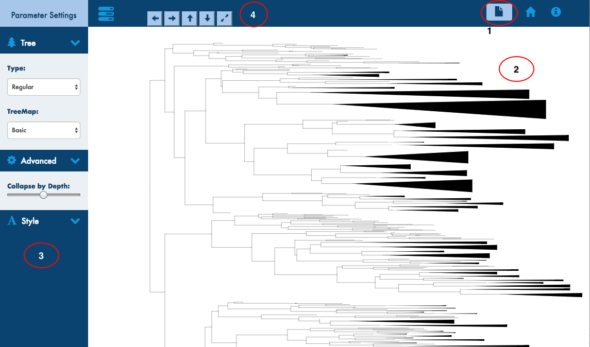

treeXplorer interface allows to visualize and explore the newick formatted phylogenetic trees based on different hierarchical data visual designs (node-link, treemap and a hybrid layout) in browser.
treeXplorer uses JavaScript, HTML5 and svg element to visualize the phylogenetic tree. So it recommended to use modern browsers like chrome, firefox and safari, however, it is highly recommended to use Google Chrome as the application has been extensively tested in Chrome at the moment and also seem to offer the best performance.
At the moment all the interfaces within treeXplorer only supports Newick formatted phylogenetic tree. Upload only the tree file in Newick tree format as below.
Example trees
The user interface is quite similar for different tree layout/visualizations that comes as a part of phyXlporer and the different sections of the interface are outlined below
The glyphicon on the navbar in the top right where the end user uploads the tree in "Newick" format as described above
Normally the div where the tree is rendered or displayed is in the center to the left of the paramters control and just below the navigation bar on the top
Displays all html elements to control the tree related parameters in display level such as dendogram or regular phylogram; Also the input to collapse the depth of the tree and other styling attributes depending on the display layout chosen
Used to change the display size of the tree such as increase the width and height of the tree and the viceversa

As stated before treeXplorer makes use of browser to visualize and therefore we make use of JavaScript, SVG and Bootstrap for styling.
All the external libraries used are under vendor directory for both css and js
The four key blocks of each app is "reading and parsing data", "apply initial settings", "core computations" and "render/draw". The flow is more or less the same across the visual layout JavaScript files
The main JavaScript file for each design discussed starts by getting the Newick input data read(readFile.js)from the browser and the read data is passed to parseNewick which converts the Newick to hierarchical JSON structure. parseNewick utilizes regular expression for the same.
function getData(input) {
tree = parseNewick(input);
initialSettings();
}
The code within this applies default settings to the html elements in the sidebar (parameter controls). For example the depth max and min value computed from the tree data passed to hierarchy layout is used to define min, max and default value of the depth collapse slider The block also defines basic tree attributes which will be used in the later blocks. The block sample below.
function initialSettings() {
d3.hierarchy(tree);
document.getElementById("depthSlider").value = maxDepth/2;
render();
}
The block contains functions that computes advanced tree attributes that gets added to the nodes. This includes collapsing nodes by depth level, uncollapsing, finding highest collapsed node at an instance, find the longest branch length, etc., that has to do only with the parameters or value not the drawing itself
function findHighestCollapsed(d) {
if (d.parent) {
if (d._children && d.parent.children) {
return d;
} else {
return (findHighestCollapsed(d.parent));
}
} else {
return d;
}
}
The render block actually draws the tree on browser leveraging mainly D3.js library and svg. The render function also comprises of updateTree block that gets executed every time a parameter is changed and redraws the tree in display area. Render block also contains the function that does some action when a change is detected in any of the html input elements such as slider, button, etc.,
The updateTree block is all about entering,updating and exiting elements in the div which is core idea of d3 in aligning data with the elements we use to represent the data such as circle, rectangle. every time we filter the data and if we end up with more elements than needed then we use exit() selection to remove the additional elements from the view, similarly if we have need more elements to be added then we use enter
function render(){
var drawSvg = d3.select("#visual").append("svg")
.style("width", width)
.style("height", height);
function updateTree(){
// enter, update and exit nodes and link of tree, rectangle, etc., that are part of the layout
var node = svg.selectAll('g.node')
.data(nodes);
var enterNode = node.enter().append("circle");
var updateNode = node.select("cirlce")
.attr("r",4); //transition to new radius
var exitNode = node.exit().remove(); //remove when collapsed the nodes not needed
}
//Action on change in slider input
d3.select("#depthSlider").on("input", function () {
//some code to uncollapse or change the depth filter value
updateTree(); //redraw tree
});
}